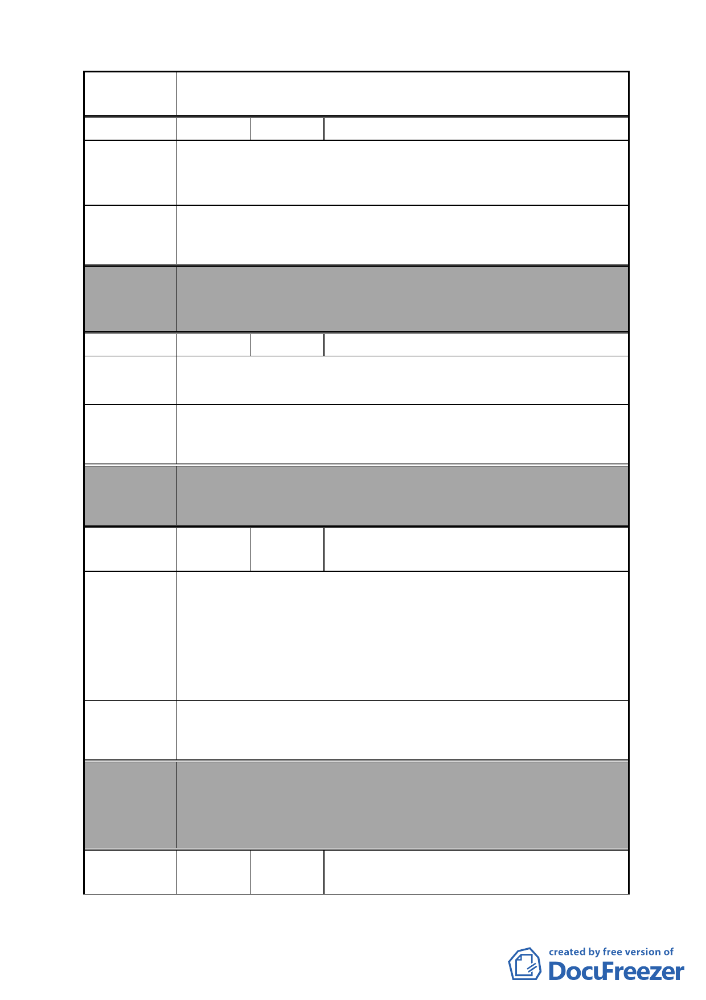

案 名 變更臺北市南港區鐵路地下化沿線土地主要計畫案
編號
陳情理由
建議辦法
64 陳情人 張阿菊
商業地變更，對住戶不利，所以反對市地重劃。本戶因基
地面積小，參加重劃可能達不到最小分配面積的 1/2，無法分
回土地。
反對變更要溝通協調。
委員會
決議
編號
陳情理由
本案除文字誤繕應再作修正外，其餘依市府本次會議所送修
正計畫書內容通過。（依市府本次會議所送修正計畫書，本案
陳情地點因位於計畫區 D 街廓內，故仍予納入市地重劃範圍）
65 陳情人 謝東燦
A 區是否加入重劃？
建議辦法
委員會 本案除文字誤繕應再作修正外，其餘依市府本次會議所送修
決議 正計畫書內容通過。
編號
陳情理由
建議辦法
66
陳情人
萬商工業大樓管理委員會（附 21 位連署
人，表示不願意）
1.本計畫土地回饋 45％偏高，損及原有土地所有權人權益。
2.檢附 A1 區 21 位無意願參與本計畫案之簽署表。
3.本計畫於 101 年都市重新規劃、設計、請領執照、整地、工
程開工、施工完工使用，時程冗長，損及原有使用人權益。
4.茲將意見表附上，務請於下一期審查本案時，通知本大樓管
理委員會列席參加。
A1 區民眾無意願參與本次計畫，請將本工業區土地另行分
割，維持原有工業區使用。
委員會
決議
編號
本案除文字誤繕應再作修正外，其餘依市府本次會議所送修
正計畫書內容通過。
（依市府本次會議所送修正計畫書，業將陳情地點剔除於市
地重劃範圍）
67
陳情人
林胡鄰長令媛轉送市民陳情書（3 份）、
連署書 7 份（計 62 人）及意見表（計 98
- 65 -